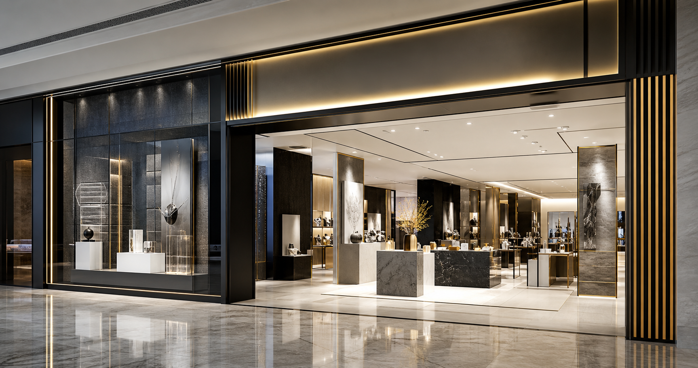
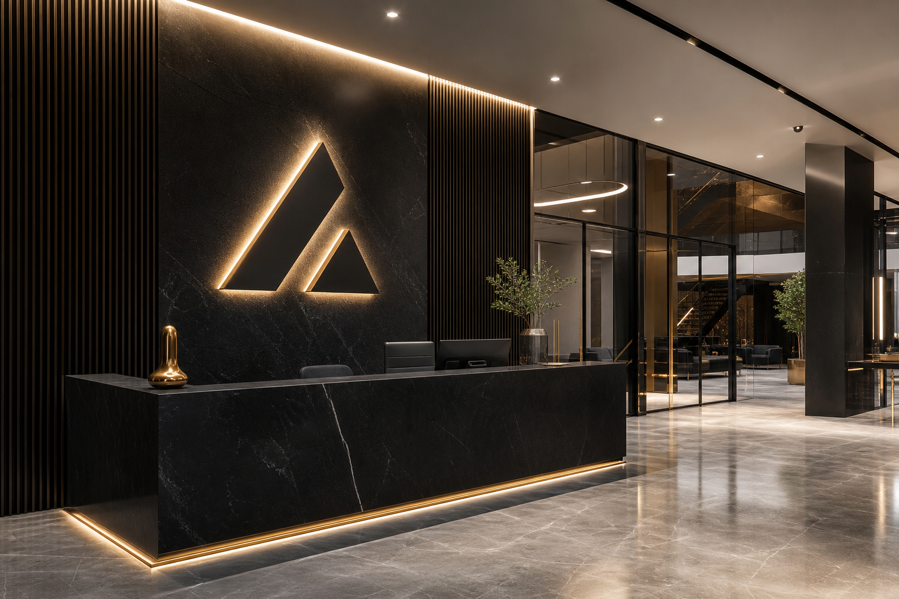

Project Detail
Retail Launch System
A retail environment designed to make the brand legible from the street, the threshold, and the point of decision.
Story
The brand needed a retail launch presence that could attract, orient, and reassure customers without becoming visually loud or operationally fragile.
Challenge
Multiple touchpoints had to work together: street visibility, entry impact, wall communication, display zones, and durable material choices for daily footfall.
Solution
ADXverse structured the environment around visibility hierarchy, illumination strategy, internal graphics, fabrication specifications, and a repeatable package for future retail locations.
Deliverables
Storefront signage, ACP and acrylic specifications, LED integration, internal brand graphics, production coordination, installation planning, and launch handover.
Outcome
The store became more recognizable at distance and more coherent inside, with a system that supports rollout rather than one-off decoration.
